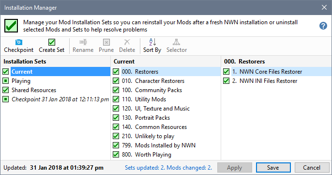

Installation Sets operate at the Group level and monitor the installation state of all the Mods belonging to the Groups comprising your Installation Set.
Changes in the installation state of monitored Mods is reflected in the affected Sets when you open the Installation Manager.

Uninstall Installation Set defined Mods
Install Installation Set defined Mods
Use the Sort By menu to change the order in which Installation Sets or ordered.
Press Ctrl+G or click Selector to toggle the display of the Group Selector list.
Work with Installation Sets